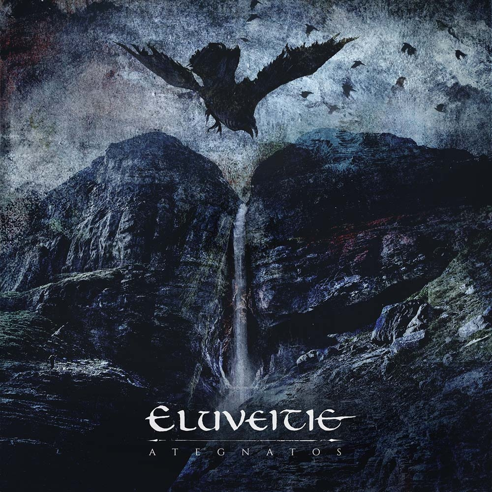
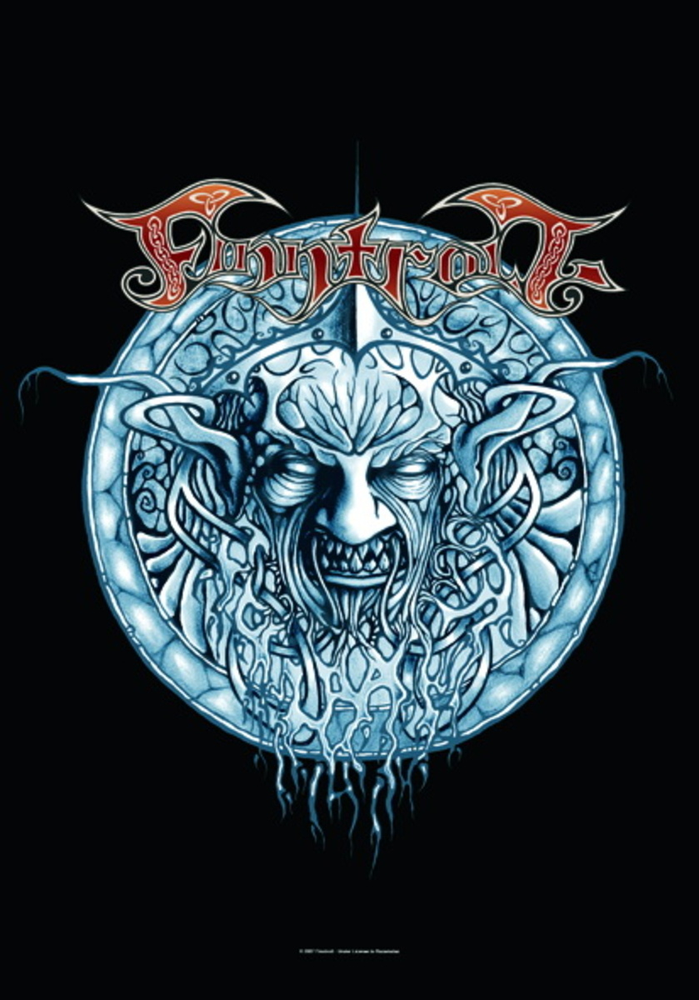
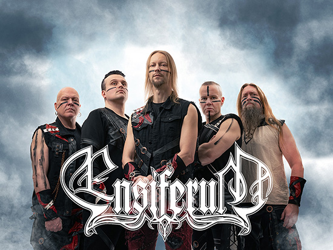

Вітання
Ласкаво просимо до світу фолк-паган металу — місця, де дух предків, природа та енергія металу зливаються в унікальний жанр.
Що це?
Це поєднання фольклорної музики, металу, міфів та національної ідентичності.
Галерея
  
Ласкаво просимо до світу фолк-паган металу — місця, де дух предків, природа та енергія металу зливаються в унікальний жанр.
Це поєднання фольклорної музики, металу, міфів та національної ідентичності.